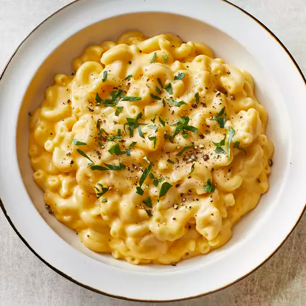

Mac and cheese

One-Pan White Cheddar Mac and Cheese
If you can make boxed macaroni and cheese, you can make this one-pan, scratch-made mac and cheese!
The bacon, chives, and crispy bread crumb topping add some great extra flavor and texture.
Ingredients
- 16 ounces uncooked elbow macaroni
- 2 ½cups milk
- 2 cups water
- 1 teaspoon garlic salt
- ½ teaspoon salt/li>
- ¼ cup margarine
- ¼ teaspoon ground black pepper
- 1 ½ cups shredded white Cheddar cheese
- ¼ cup panko bread crumbs
- ¼ cup real bacon bits
- 1 tablespoon snipped chives
Steps
- PCombine macaroni, milk, water, garlic salt, and salt in a Dutch oven on a stovetop over medium-high heat. Bring to a boil, stirring occasionally. Reduce heat to a simmer and cook, stirring frequently so noodles don't stick to the pan, until noodles are soft and most of the liquid has been absorbed, 7 to 10 minutes.
- Remove pot from heat and stir in margarine and pepper until melted. Stir in Cheddar cheese and 1/4 cup of the Parmesan cheese until melted.
- Set an oven rack about 6 inches from the heat source and preheat the oven's broiler.
- Top pasta with bread crumbs, remaining 1/4 cup of Parmesan cheese, and bacon bits.
- Place Dutch oven under the broiler until topping is lightly browned and crispy, 1 to 3 minutes. Top with chives and serve immediately.